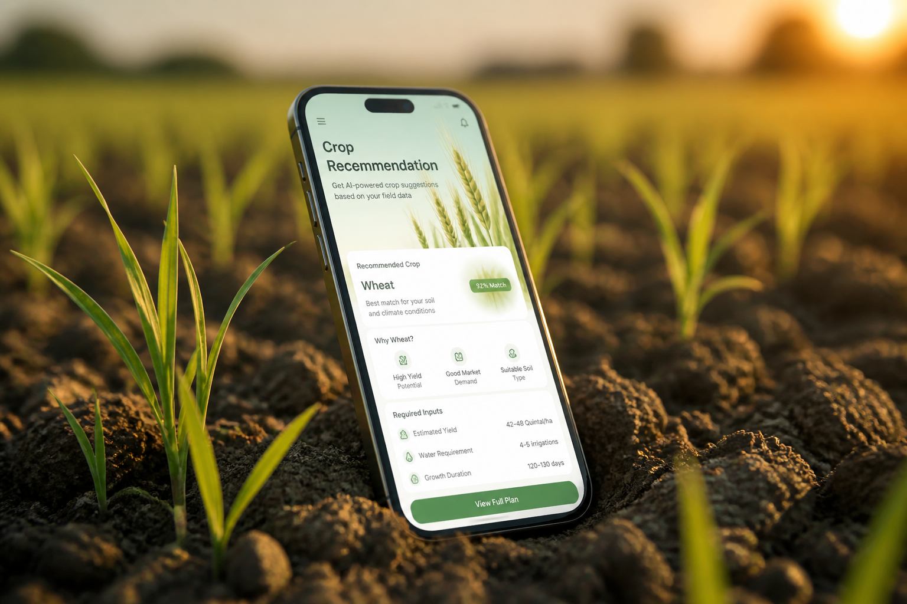

معرفة أرضك
حدد موقعك وسنبني التوصية على ظروف أرضك الفعلية.
نظام ذكي متكامل يساعدك تختار المحصول المناسب لأرضك قبل الزراعة، بجمع معلومات الموقع والتربة والطقس في تجربة بسيطة وواضحة.

كثير من المزارعين يواجهون صعوبة في معرفة أي محصول يناسب أرضهم، فتضيع موارد ثمينة قبل ما تبدأ الزراعة.
في المناطق الجافة، الخطأ في اختيار المحصول يعني هدر ماء وجهد وموسم كامل.
اختيار محصول يحتاج ماء أكثر من اللازم يضغط على الموارد الشحيحة.
التجربة والخطأ تأخذ مواسم طويلة قبل الوصول للمحصول المناسب.
الخسارة تصل للبذور والأسمدة والجهد قبل ظهور أول نتيجة.
صعوبة معرفة ملاءمة التربة والطقس بدون خبرة متخصصة قريبة.
نصائح عامة لا تناسب كل موقع وكل موسم.
أدوات معقدة أو مكلفة تبعد المزارع عن استخدامها يوميًا.
قرارات زراعة أفضل تدعم إنتاجًا أكثر استقرارًا واستدامة.
كل توصية صحيحة تحافظ على الماء والأرض للأجيال القادمة.
نساعدك تأخذ قرار الزراعة بثقة — من موقع أرضك إلى توصية محاصيل واضحة تناسب ظروفك.
Agrivision يحول موقع أرضك إلى توصيات عملية تفهمها بسرعة، بدون تعقيد وبدون تخمين.
كل ما تحتاجه لقرار زراعة أذكى — بخطوات بسيطة.
حدد موقعك وسنبني التوصية على ظروف أرضك الفعلية.
محاصيل مرتّبة بنسبة ملاءمة تساعدك تقرر بسرعة.
استخدمه من متصفحك في أي مكان — بدون تعقيد.